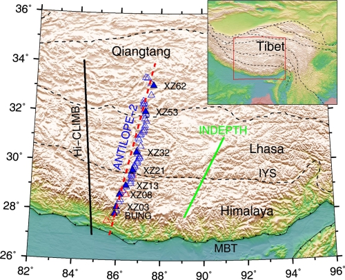
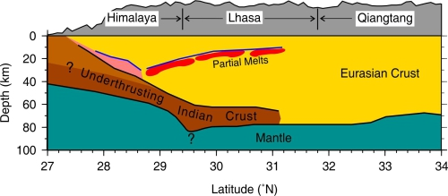

通常认为，印度板块地壳的俯冲引起了青藏高原南部的地壳增厚。已有的研究结果发现了与印度地壳俯冲有关的痕迹，如主边界断裂 (MBT), 主喜马拉雅逆冲断裂 (MHT) 和下地壳存在一个明显的间断面
(Moho doublet)等。但是，没有一条南北向剖面的研究结果能够直接观测到上述的这些俯冲特征。
大陆碰撞与高原隆升实验室赵俊猛研究员课题组与德国地学研究中心合作，利用P波接收函数成像的方法调查了羚羊计划-2测线 (ANTILOPE-2) 的地壳结构，研究结果主要包括：(1)
揭示了Moho在西藏南部沿羚羊计划-2剖面（樟木-双湖）不同地体之间的深度及其横向几何变化特征；(2) 拉萨地体的~60
km存在一个壳内连续界面，这个界面连接着地表的MBT和喜马拉雅地体下方的MHT，可能代表着印度地壳的俯冲一直到达班公湖-怒江缝合带的南侧；(3) 拉萨地体和喜马拉雅地体下方的14-30
km深度观测到了一个中地壳的低速层，这个低速层的形成可能和部分熔融或者含有水有关。
以上研究成果近期发表在Gondwana Research 上 ( Xu, Q., Zhao, J.M., Yuan, X.H., Liu, H.B., Pei, S.P., 2015. Mapping crustal
structure beneath southern Tibet: Seismic evidence for continental crustal underthrusting. Gondwana Research,
27(4), 1487-1493)。
论文链接：www.sciencedirect.com/science/article/pii/S1342937X14000276

图1. 羚羊计划-2测线位置图

图2. 依据P波接收函数的结果得出的羚羊计划-2测线的的综合解释图